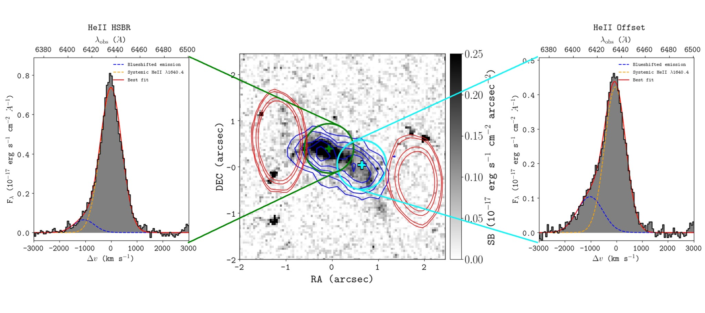
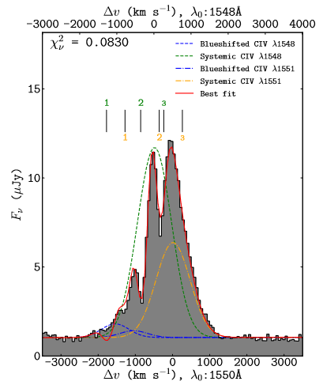
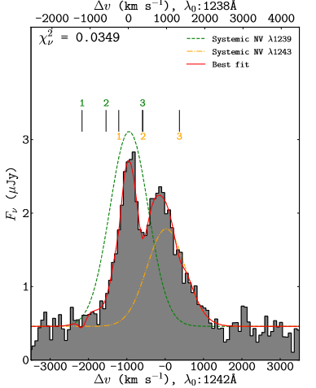
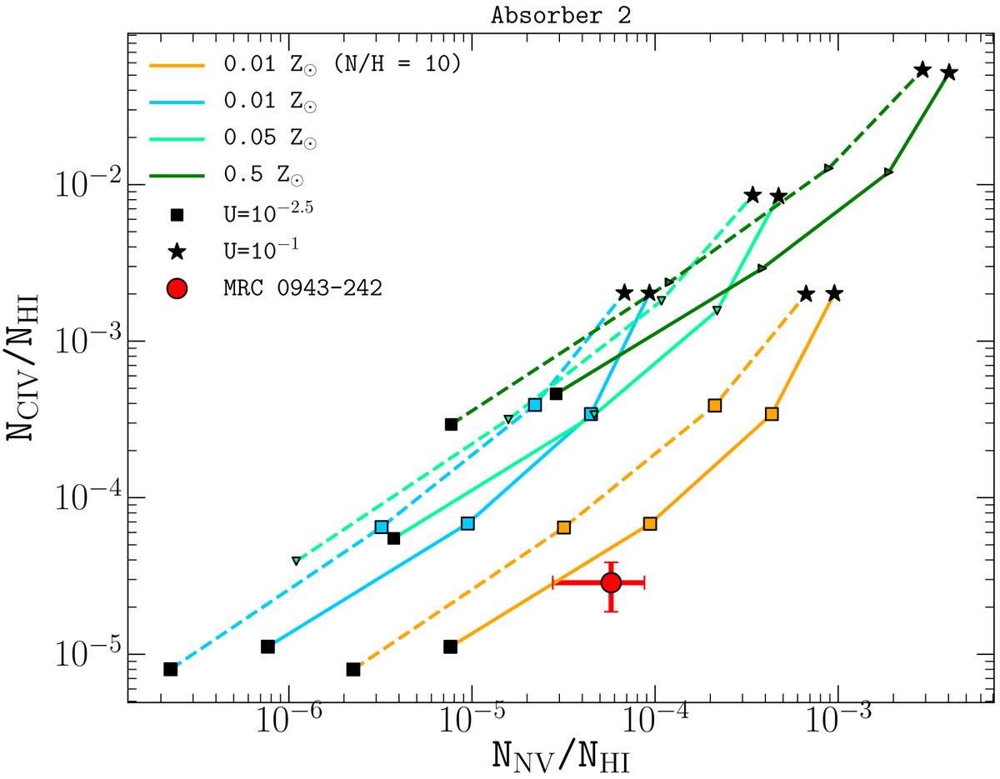
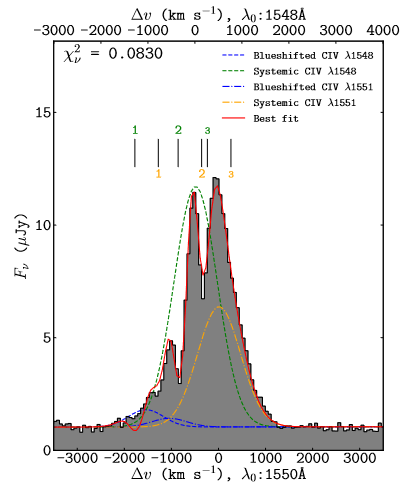
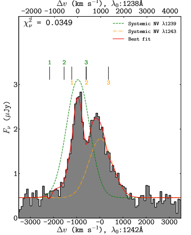
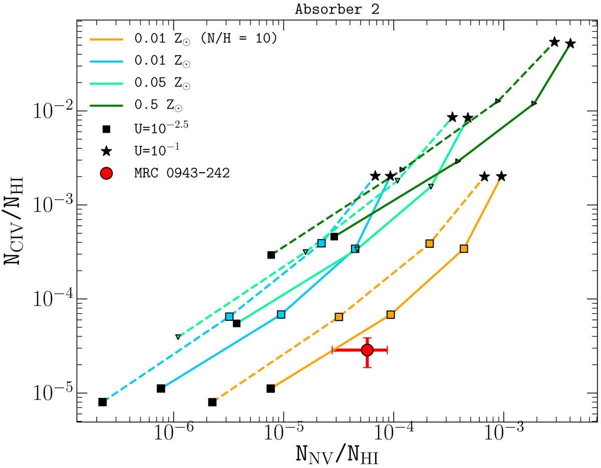
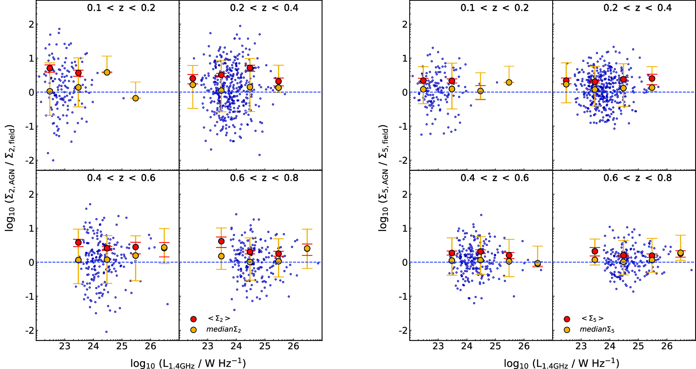
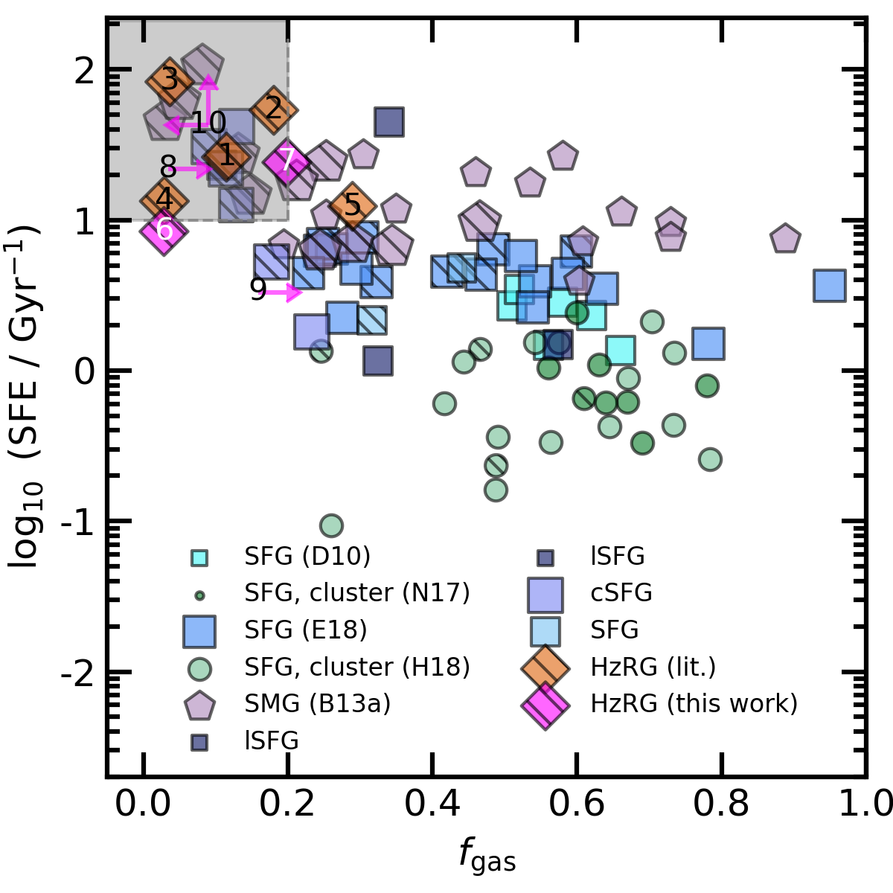
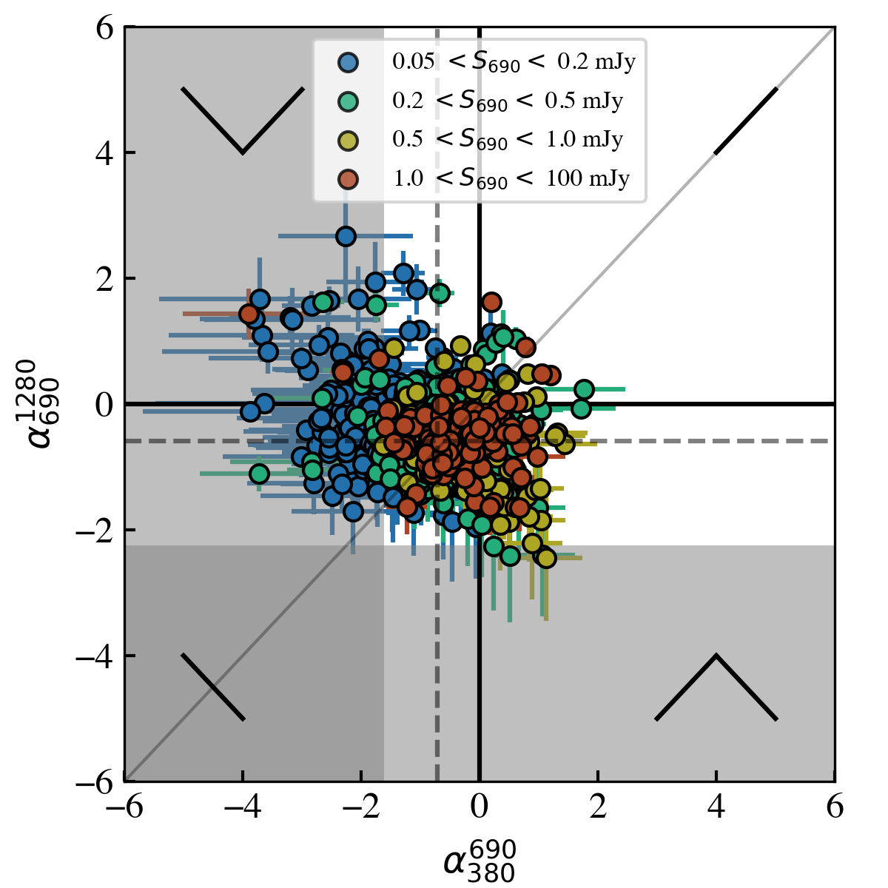

Dr. Sthabile Kolwa
The University of South Africa (UNISA)
kolwasn [at] unisa.ac.za
Hi! My name is Sthabile. I am a radio astronomer whose main research interests center around two overarching topics (i) active galactic nuclei (AGN) and (ii) source populations selected by deep extragalactic radio surveys. Currently, I am carrying out much of this research as a member of the MeerKAT Large Survey Project working group MIGHTEE, superMIGHTEE (MIGHTEE + commensal uGMRT observations), and LOFAR collaborations. I am also involved in efforts to develop anomaly detection software pipelines for the Vera C. Rubin Observatory / LSST.
Active Galactic Nuclei (AGN)
- Observational constraints on AGN feedback The tightly constrained black-hole and bulge mass (KH13) and black-hole mass velocity dispersion (G09) relations in astrophysics demonstrate the inextricable link between the evolution of supermassive black-holes and their host galaxies. In studying the intricate ways in which active galactic nuclei (AGN), through jets and radiative winds, impact star-formation, we are capable of developing a deeper understanding of how black-holes co-evolve with their galaxies.
- The impact of large-scale (Mpc) structure on AGN activity While it is commonly accepted that AGN have a significant impact on the host galaxy's stars, dust and gas, the role of environment on AGN triggering is rather contentious. Results are biased by the wavelength-selectin of AGN and the distance-scale on which environment density is measured. My latest interest is in studying the influence of cosmological Mpc-scale structures on occurrence and recurrence of AGN.
- The evolution of radio-AGN and star-forming galaxies In deep extragalactic radio continuum surveys, we can select wide samples radio-active galactic nuclei and star-forming galaxy populations. Combining these sensitive radio detections with infrared, optical and X-ray detections, we can trace emission from the stars, dust, gas and central black-hole of galaxy. With such multiwavelength datasets, we place observational constraints on the relations between physical components within the host galaxies in hopes of understanding how the galaxies have evolved.
- Quantifying systematic bias and selection-effects Radio continuum detections are incredibly useful in providing dust-unbiased observations of galaxies. However, problems such as incompleteness and blending do arise when we cross-identify radio-detected sources with multi-wavelength (optical, infrared and X-ray) catalogues. Incompleteness and blending in multi-wavelength cross-identification can lead to biases in observed scaling relations, luminosity and mass distributions of radio-selected sources. One focal point of my research is the development of new and innovative ways to quantify, predict and correct the impact of instrument-related and observational biases.
In an effort to understand how kinetic or mechanical feedback operates within galaxies hosting radio-loud active galactic nuclei, my collaborators and I examined optical integral field unit (IFU) datacubes from the Very Large Telescope (VLT) UT4 instrument, MUSE, as well as mm/sub-mm data from ALMA for a handful of radio galaxies.
Of this sample, we selected the radio galaxy MRC 0943-242 for single-source study on the extended emission nebular region. This work was published in Kolwa et al. 2019b. where we provide evidence for jet-gas interactions in HeII 1640Å emission lines (shown below) based on the VLT/MUSE observations. Additionally, we trace the cool, ionised gas component (T~10,000 K) within the extended halo of a high-power radio-AGN host galaxy at z=2.9.

The VLT/MUSE observations also provide evidence of a large-scale (<60 kpc wide) expanding shell of metal-enriched and ionised gas which results the observed absorption lines superimposed on the Lyman-α, CIV and NV (shown below) emission profiles detected across the projected scale of the extended Lyman-α nebulae surrounding this galaxy.


The VLT/MUSE observations also provide evidence of a large-scale (<60 kpc wide) expanding shell of metal-enriched and ionised gas which results the observed absorption lines superimposed on the Lyman-α, CIV and NV (shown below) emission profiles detected across the projected scale of the extended Lyman-α nebulae surrounding this galaxy.


In the past, I studied the kpc-scale environments of radio-AGN. In Kolwa et al. 2019a, we obtained a sample of VLA-detected radio sources in the SDSS Stripe 82 field and found significant and consistent over-densities within galaxy group scale environments of nearby radio-AGN z < 0.8. In agreement with the majority of findings on radio-AGN, we found that the kpc-scale environments of radio-AGN host galaxies are over-dense relative to non-AGN (or inactive galaxies) and radio-power is not strongly correlated with environment over kpc3 volumes, in the nearby Universe.

Radio Source Populations
In Kolwa et al. (2023), we obtain constraints and upper limits on molecular gas mass from neutral carbon line emission in seven high-redshift radio galaxies (HzRGs). These detections allowed us to determine their gas fractions and star-forming efficiencies (seen below).

In current work, we study spectral curvature of the faint microJansky radio source population selected by MeerKAT/MIGHTEE L-band and uGMRT (superMIGHTEE) surveys which span observing frequencies of approximately 100 - 1800 MHz. We do so with the purpose of determining the physical mechanisms underlying radio emission in these sources (mainly radio-AGN and star-forming galaxies). Owed to the fact that our radio source sample is incomplete, relations such as the radio colour-colour plot (seen below) are systematically biased towards specific spectral shapes. In this case, predicting the unbiased distribution via simulations of radio source populations is crucial.
